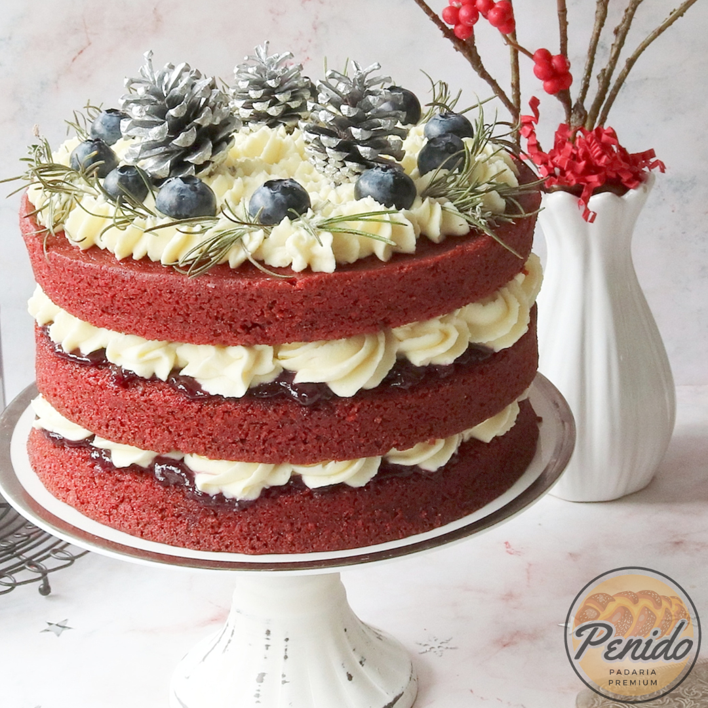

Além dos pães e bolos tradicionais, nossa padaria oferece opções elaboradas e sofisticadas, como croissants, brioches, macarons e outras delícias que agradam aos paladares mais exigentes. Nos destacamos pelo atendimento personalizado e atencioso, pois nossos funcionários são treinados para atender aos clientes com cortesia e presteza, oferecendo informações sobre os produtos e ajudando a escolher as melhores opções de acordo com as preferências de cada um.
Nossos pães são produtos de alta qualidade que se destacam pela seleção criteriosa dos ingredientes e pelo processo de fabricação artesanal. Eles são preparados com farinhas especiais, fermentos naturais e outros ingredientes selecionados, o que resulta em um produto final com sabor, textura e aroma únicos, que você só encontra aqui!
Nossas opções de bolos personificam a quintessência da confeitaria refinada, apresentando uma fusão perfeita entre arte e sabor. Cada camada é meticulosamente concebida para cativar os sentidos, incorporando ingredientes de qualidade superior e uma atenção minuciosa aos detalhes. Desde as texturas luxuosas até as combinações de sabores inovadoras, cada fatia oferece uma experiência gustativa que transcende as expectativas convencionais. A habilidade artesanal dos nossos confeiteiros especializados se reflete na perfeição visual e no equilíbrio harmônico de cada criação, transformando cada ocasião em um momento memorável e requintado.
